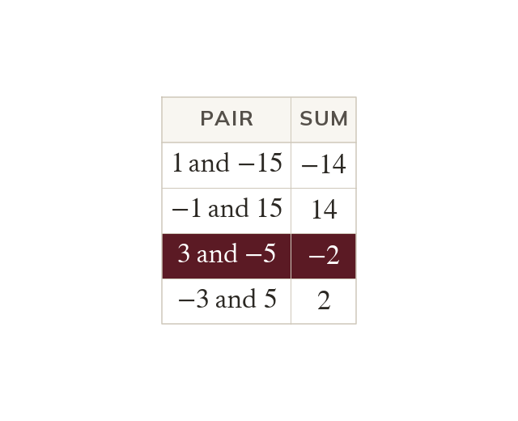
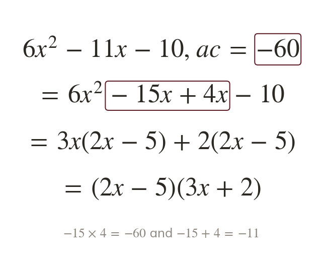
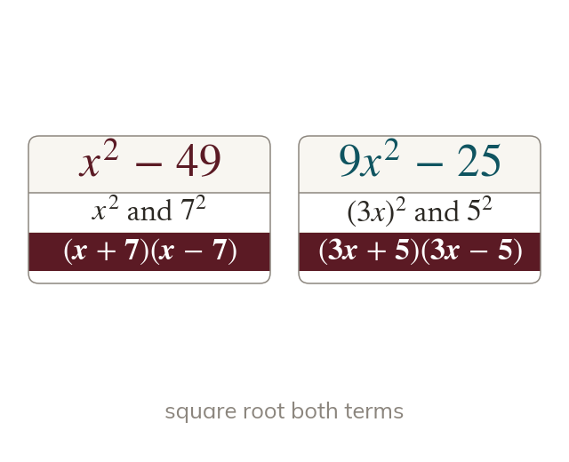
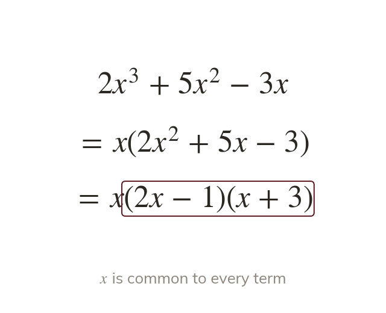
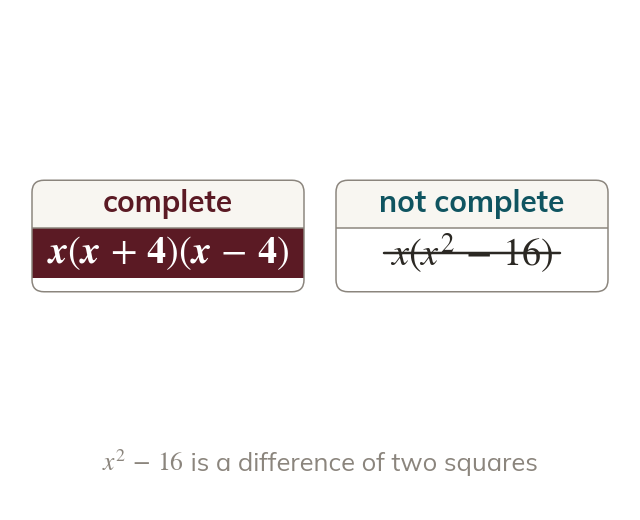
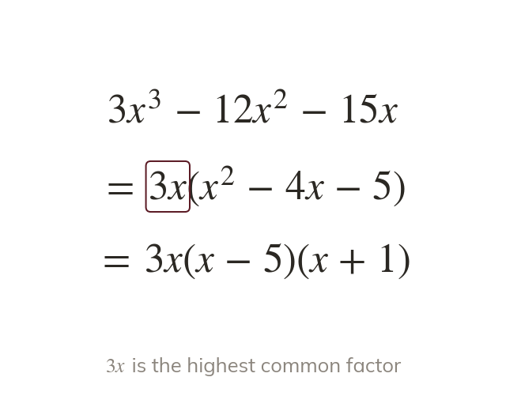

Two numbers
when and The signs of and tell you the signs of and
Factorising turns a sum back into a product, which is how quadratics and cubics are solved and sketched in chapters to
The next lesson extends the index laws to negative and fractional powers.
Work down the page at your own pace. Write every answer in your book first, then click to check it.
Read each card, then follow the worked examples one step at a time.

when and The signs of and tell you the signs of and

For + bx + find two numbers that multiply to and add to b. Split the middle term with them, then factorise in pairs.

because the middle terms cancel. It works for any two squares, such as
Pick an answer. If it's wrong, the feedback tells you which mistake it was.
Write the blanks in your book first, then tap each one to check.
Read each card, then follow the worked examples one step at a time.

Take out the highest common factor of every term, numbers and powers of x. What is left in the bracket is often a quadratic.

After the common factor, check whether the bracket factorises again. is not finished at

A number can be common to every term too, so take it out with the x. Then factorise the bracket.
Pick an answer. If it's wrong, the feedback tells you which mistake it was.
Write the blanks in your book first, then tap each one to check.
Finished? Next lesson: 5.1 Gradients and the Line y = mx + c.
For each skill, tap the one that is true for you today. Your Revise pages start with anything you mark Not yet.
Your ratings are saved on this device only.
Log in, then search for a code to practise that skill.